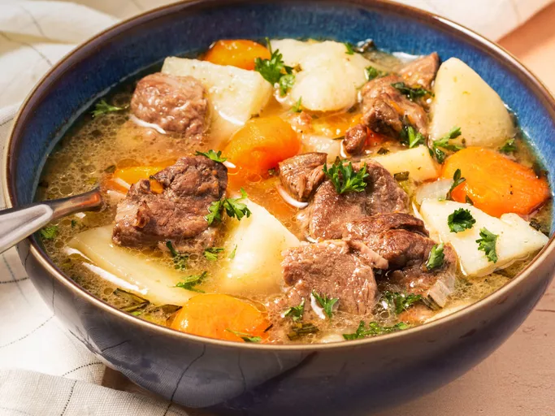

Irish Stew

Traditional Irish Stew
Irish stew is made with lamb. Every Irish household has its own recipe for this famous dish. I like to add chunky pieces of parsnip for a little sweetness and fresh rosemary for a distinct flavor and aroma. Fantastic on St. Patrick's Day served with a pint of the black stuff, of course!
Ingredients
- Oil: Cook the lamb in a tablespoon of olive oil.
- Lamb shoulder: Traditional Irish stew is made with lamb, but you can use boneless beef chuck if you prefer.
- Seasonings: Season the meat with salt and pepper. Fresh rosemary gives the stew flavor, while a fresh parsley garnish adds a pop of color.
- Vegetables: You’ll need an onion, carrots, a parsnip, potatoes, and leeks for this hearty Irish stew.
- Water: The broth starts with four cups of water.
Steps
- Cook the lamb pieces until evenly browned, then season with salt and pepper.
- Add the onion, carrots, and parsnips, then stir in the water. Cover and bring to a boil.
- Reduce the heat and simmer until lamb is tender.
- Stir in the potatoes and simmer, then add the leeks and rosemary.
- Continue to simmer uncovered, until potatoes are tender.
- Serve garnished with parsley.